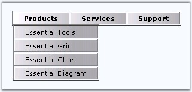
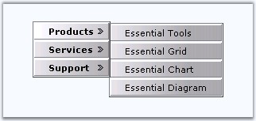
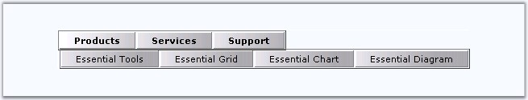
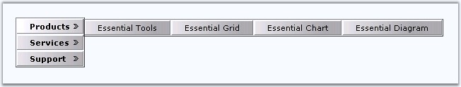

Menus can be rendered either horizontally or vertically. Essential Tools Menu enables you to arrange the root and submenus either vertically or horizontally by setting the appropriate properties.
Menu root panel can be oriented horizontally or vertically by setting the Layout property. The default value is Horizontal. The subpanels can be oriented horizontally or vertically by setting the item's PopupLayout property in the Designer dialog. The default value is Vertical.
The different arrangements of the menu root and subpanels are shown below.
Horizontal Roots and Vertical Sub menus

Figure 218
Vertical Roots and Vertical Sub Menus

Figure 219
Horizontal Roots and Horizontal Sub Menus

Figure 220
Vertical Roots and Horizontal Sub menus

Figure 221